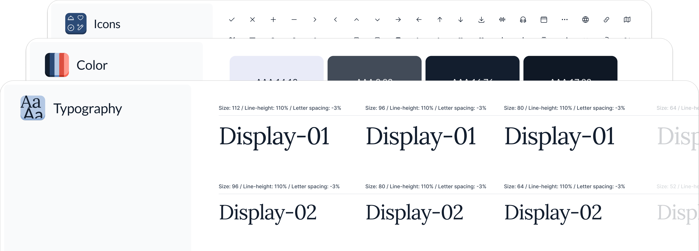
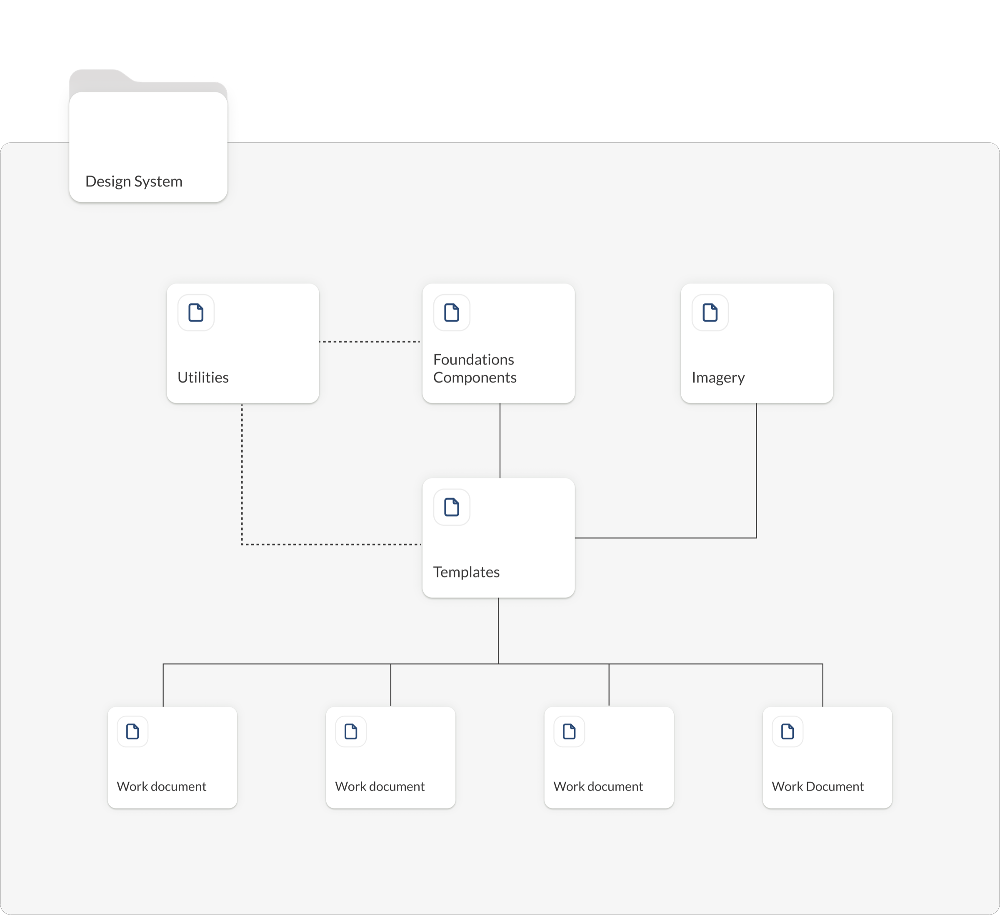
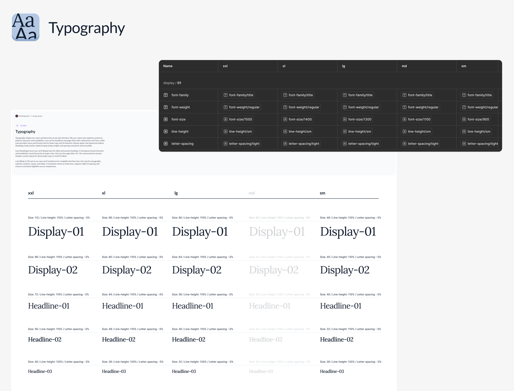
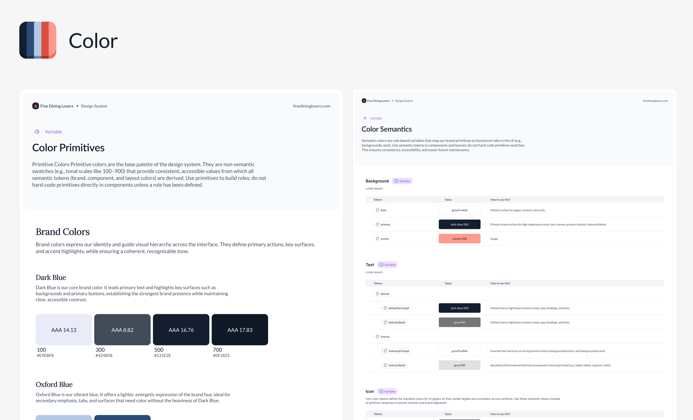

Fine Dining Lovers
Design System

Client
Sanpellegrino
Year
Jan 2026–Present
Role
Product Designer
Platform
Web
CASE STUDY
Building a Scalable Foundation
for Growth
How we are evolving a simple UI library into a robust Design System to increase consistency, improve collaboration, and support the future growth of the Fine Dining Lovers platform.
THE PROBLEM
The Growing Pains of
a Successful Platform
Following the successful redesign of Fine Dining Lovers, the platform was growing fast. However, our internal design tools were not keeping pace. Our initial UI library was becoming a source of challenges:
Inconsistencies
Different teams were creating slightly different versions of the same components, leading to a fragmented user experience.
Inefficiency
Development was slowing down as engineers had to rebuild components or guess at design specifications.
Scalability Issues
A strategic decision to update our responsive breakpoints forced us to make time-consuming manual adjustments.
We realized we didn't just need a new library; we needed a new way of working. We needed a true Design System.
OUR GOAL
A System for Speed
and Consistency
Our team's goal was to build a single source of truth for both designers and developers. We defined three key objectives for the new Design System:
Increase Consistency
Ensure a unified brand and user experience across the entire platform.
Improve Efficiency
Help our team design and build higher-quality products faster.
Establish a Shared Language
Create a common vocabulary between design and engineering to improve collaboration.
OUR APPROACH
Building the Foundations
We started by focusing on the core foundations of our design language: architecture, typography, color, and spacing.
Architecture First
Before creating any components, we took a step back to define the system's architecture. A well-organized structure is key to a scalable, easy-to-use system. This planning phase ensured our system was built to last and could adapt to future needs.

Revamping Typography
Our typography was the first foundation we rebuilt, as it was directly impacted by the new breakpoints. We simplified our type scale and used Figma's Modes to handle the new responsive breakpoints. This allows us to define our typographic styles once and easily see how they adapt across different screens.

Creating a Smart Color System
We audited our color palette to make it more intentional. We simplified the palette, clarified naming conventions, and introduced semantic tokens — which describe a color's purpose in the UI (e.g., color-background-primary). This enforces consistency, makes maintenance easy, and prepares our system for future features like Dark Mode.

Establishing a Consistent Spacing System
Before this project, we had no formal spacing system, which led to inconsistent layouts. We created a comprehensive spacing system based on a reusable, token-based scale — defining values for both internal spacing (paddings inside components) and external spacing (margins and gaps between components). Built using Figma's Modes, our layouts now adapt intelligently and consistently across all new breakpoints.
IMPACT & NEXT STEPS
An Ongoing Foundation
This is an ongoing project, but by building these strong foundations, we are already seeing a positive impact on our team's workflow.
Impact so far
Our team now has a single source of truth for typography, color, and spacing. This has reduced ambiguity, improved our design–developer handoff, and laid a scalable foundation for the future.
What's next
Our work on the Design System continues, with a clear roadmap to increase its value:
Build out our first set of core components — buttons, inputs, and cards — using the new tokens.
Propose the adoption of a tool like Storybook to create a live, interactive library. This will bridge the gap between design and development, ensuring our code is always a true reflection of our design system.
Establish a clear governance model to define how the system will be maintained and updated by the team in the long term.